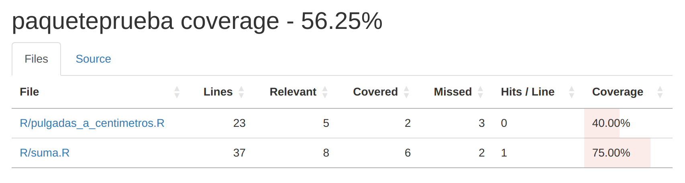

use_test("suma") # Crea y abre tests/testthat/test-suma.R12 Dependencias y tests
12.1 Objetivos de aprendizaje
- Identificar las dependencias del paquete y registrarlas en
DESCRIPTION. - Añadir pruebas (tests) de una función del paquete usando
testthat. - Ejecutar todos los tests del paquete.
- Describir que resultado se espera de una función y usar la familia
expect_xxx()en tests. - Revisar la cobertura de los test y definir cuando es necesario agregar nuevos.
12.2 Dependencias
Existe una dependencia cuando tu paquete utiliza funcionalidad de otro paquete (u otra herramienta externa). Por ejemplo, si una función de tu paquete usa mutate(), entonces dplyr es una dependencia de tu paquete. Esto implica, entre otras cosas, que una persona necesita instalar dplyr antes de poder usar las funciones de tu paquete.
Estas dependencias deben incluirse en el archivo DESCRIPTION. En general, éstos van en una sección llamada “Imports”, lo que asegura que momento de instalar el paquete también se instalen las dependencias (si es que no están ya instaladas). También existe la sección “Suggests”, en donde se pueden listar paquetes que no son esenciales para que tu paquete funcione. Por ejemplo, una función que utiliza un método estadístico disponible en R base o una versión más eficiente provista por otro paquete si éste está instalado. En esta sección también van paquetes que son necesarios únicamente durante el desarrollo.
Así se verán en el archivo DESCRIPTION:
Imports:
dplyr,
tidyr
Suggests:
ggplot2,
testthatEn este caso, el paquete utiliza funciones de dplyr y tidyr en su funcionalidad básica. El paquete ggplot2 puede estar en Suggests porque la funcionalidad de graficado usa ggplot2 sólo si éste está instalado y usa plot base si no. El paquete testthat es el que vamos a usar durante el desarrollo para realizar los tests, pero no es necesario para usar el paquete.
Y por supuesto, podemos usar usethis para agregar nuevas dependencias con usethis::use_package("dplyr"). La función nos devuelve:
#> ✔ Adding dplyr to 'Imports' field in DESCRIPTION.
#> ☐ Refer to functions with `dplyr::fun()`.Habrás notado que nos pide que llamemos a las funciones usando esta notación dplyr::fun(). Esto es muy importante, en el código de funciones nunca debemos incluir la carga de librerías con library(). Hay dos razones por las que no hacemos esto:
- En el contexto de un paquete queremos ser eficientes y trabajar de manera ordenada. Si llamaramos a una librería entera con
library()estaríamos cargando todas las funciones importadas por ese paquete cuando tal vez solo necesitamos una. Esto no es eficiente y puede traer problemas si otros paquetes tienen funciones con el mismo nombre. - La sintaxis
dplyr::fun()ayuda a entender de donde viene la función y diferenciar, por ejemplostats::filter()dedplyr::filter()que tienen argumentos y funcionalidades completamente distintas.
Es fácil olvidarse de las dependencias, lo bueno es que esta es una de las cosas que se chequean cuando corremos los chequeos R CMD.
R Base proporciona varias herramientas para chequear un paqeute. R CMD check es el método oficial para comprobar que un paquete de R es válido. Es esencial pasarlos checks de R CMD check si planeas enviar tu paquete a un repositorio oficial. Pero aún si ese no es el plan es muy recomendable correr estos checks periodicamente. R CMD check detecta muchos problemas comunes que de otro modo descubrirías por las malas.
12.3 Tests
Las pruebas o tests son una parte vital del desarrollo de paquetes: garantizan que tu código haga lo que vos necesites que haga.
Hasta ahora, tu flujo de trabajo tiene más o menos esta pinta:
- Escribis una función.
- La cargas con
devtools::load_all(), quizás medianteCtrl/Cmd + Shift + L. - La corrés en la consola para ver si funciona.
- Revisas y modificas lo necesario.
Si bien estás chequeando el código al hacer todo esto, sólo lo estás haciendo de manera informal. El problema con este enfoque es que cuando vuelvas a este código dentro de 3 meses para añadir una nueva funcionalidad, es probable que hayas olvidado parte de lo que hace. Esto hace que sea muy fácil romper el código que solía funcionar.
En esta sección vamos a ver como crear test para las funciones usando el paquete testhat. Además, incluiremos estos tests en el paquete para y crearemos un flujo de trabajo que nos permita chequear las funciones del paquete cada vez que hagamos un cambio.
12.3.1 Configuración inicial
Para configurar tu paquete para usar testthat, ejecutá en la consola:
usethis::use_testthat(3)Esto hará:
Creará un directorio
tests/testthat/.Añadir
testthata la lista de Suggests en DESCRIPTION y especificará la versión de testthat 3e enConfig/testthat/edition:
Suggests: testthat (>= 3.0.0)
Config/testthat/edition: 3- Crea un archivo
tests/testthat.Rque ejecuta todas las pruebas cuando se ejecuteR CMD check.
12.3.2 Creando tests
Es esperable que cada función tenga al menos 1 test, probablemente más de uno si la función es compleja. Normalmente por cada archivo .R que contiene 1 función o una familia de funciones tendremos un archivo .R con los tests correspondientes que se guardará en tests/testthat/. Por ejemplo para la función suma() que está en R/suma.R tendrá tests en tests/testthat/test-suma.R.
Por supuesto usethis tiene una función que crea estos archivo en el lugar que corresponde:
Además, si el archivo ya existe siemplemente lo abre para agregar o editar el test.
Ahora si, un test está formado por 1 o más expectativas, es decir lo que esperamos que devuelva la función ya sea el resultado o un error si recibe el argumento equivocado. Por ejemplo, para la función suma() la expectativa es que si le pasamos los argumentos 2 y 2, devuelva 4. En este caso el test tendrá esta pinta:
test_that("la suma funciona", {
expect_equal(object = suma(2, 2), expected = 4)
})test_that()es la función principal que encapsula las expectativas e incluye una descripción de lo que hace el test, en este caso “la suma funciona”.expect_equal()es una de las posibles expectativas o funciones que revisan que la funciona devuelva lo que esperamos en cada caso. Como esta función hay otras que nos van a permitir revisar el resultado de distintas funciones. Todas reciben al menos 2 argumentos, la expresión que queremos testear y el resultado/mensaje/valor esperado.
En todos los casos si el resultado que devuelve la expresión y lo esperado no coinciden, test_that() devolverá un error.
En este punto ya podemos correr este test o las expectativas de manera individual. Para esto primero hay que correr devtools::load_all() o usar el atajo de teclado para cargar la versión actual del paquete y luego ejecutar cada expectativa o el test completo. Al correr el test entero, si se cumple la expectativa veremos esto en la consola:
Test passed12.3.3 Expectativas
Hablemos de las expectativas. A simple vista esta linea de código expect_equal(object = suma(2, 2), expected = 4) parece casi ridícula, por supuesto que la función que acabamos de escribir va a devolver 4 cuando le pasemos como argumentos 2 y 2. Además, seguro corriste la función varias veces con distintos argumentos para asegurarte que de lo que esperamos.
Sin embargo es posible que en el futuro, cambiemos algo en la función ´suma()´ por alguna razón y que deje de dar el resultado correcto. Para esto estan los tests, para detectar errores en el futuro.
De la misma manera que usamos expect_equal() para evaluar que el resultado de la función sea igual a lo que esperamos, hay otras funciones que revisan diferentes elementos:
expect_length()revisa si la función devuelve un vector de un largo específico.expect_lt(),expect_lte(),expect_gt(),expect_gte()chequean si el valor numérico que devuelve la función cumple la condición mayor/menor correspondiente.expect_true(),expect_false()chequean si el resultado esTRUEoFALSE.expect_error(),expect_warning(),expect_message(),expect_condition()revisa si la función devuelve un error, warning, mensaje o condición.
Veamos en más detalle este último grupo. Normalmente, cuando se testea un error, nos preocupan dos cosas:
- ¿El código falla? Específicamente, ¿falla por la razón correcta?
- ¿El mensaje de error tiene sentido para la persona que tiene que resolver el error?
Un posible ejemplo de uso para expect_error() sería:
test_that("no suma caracteres",
expect_error(suma("1", 1), "Los argumentos deben ser numéricos")
)Sabemos que si intentamos sumar "1" y 1 la función devolverá el mensaje “Los argumentos deben ser numéricos”. Pero en un futuro podría pasar que sin querer modificamos esta parte del código y deja de dar ese mensaje. El test podrá identificar ese cambio y avisarnos.
Ahora vamos a trabajar con la primera función que vimos: pulgadas_a_centimetros().
- Si la función no es parte de paqueteprueba, agregala. Podés copiar el código que está en la sección Funciones.
- Hace una lista de expectativas, es decir, posibles resultados o mensajes que podría devolver la función en distintas situaciones.
- Identifica que función de la familia
expect_xxX()deberías usar en casa caso. - Escribí al menos 2 tests usando las expectativas que definistes.
- Ejecutá cada expectativa de manera individual para asegurarte que funcionan.
12.4 Testeo general
Hasta ahora ejecutamos cada test uno por uno a mano. Esto tiene sentido cuando estamos trabajando en cada uno. Sin embargo al final del día o luego de resolver un problema o agregar algo nuevo al paquete es importante correr todos los test juntos. Podemos hacer esto con devtools::test() o el atajo de teclado Ctrl+Shif+T. En el caso de nuestro paquete de prueba y si sale todo bien, nos devolverá algo como esto:
ℹ Testing paqueteprueba
✔ | F W S OK | Context
✔ | 1 | pulgadas_a_centimetros
✔ | 2 | suma
══ Results ═══════════════════════════════════════════════════════════════════════════════════════════
[ FAIL 0 | WARN 0 | SKIP 0 | PASS 3 ]El flujo de trabajo ahora tiene la siguiente pinta:
Pero también es muy común correr directamente devtools::check() o el atajo Ctrl/Cmd + Shift + E. Este comando corre algo llamado “R CMD checks”. Es un conjunto de más de 50 test que cualquier paquete debe pasar para cumplir con los estandares definidos. Entre otras cosas chequea:
- Metadatos
- La estructura del paquete y los archivos que contiene
- DESCRIPTION: información, dependencias, etc.
- NAMESPACE
- Código de R: revisa errores de sintaxis, caracteres no ASCII y otros problemas asociados a las funciones
- Datos del paquete (si hubiera)
- Documentación: metadatos, links, ejemplos, etc.
- Tests
- Viñetas
Por el estado en el que está nuestro paqueteprueba, seguramente al correr R CMD checks nos vamos a encontrar con problemas. Esto es normal, es el momento de resolverlos antes de continuar.
La salida de los checks es bastante larga porque revisa varias cosas, pero esta es la parte que nos interesa:
❯ checking DESCRIPTION meta-information ... WARNING
Non-standard license specification:
`use_mit_license()`, `use_gpl3_license()` or friends to pick a
license
Standardizable: FALSE
❯ checking code files for non-ASCII characters ... WARNING
Found the following files with non-ASCII characters:
R/pulgadas_a_centimetros.R
R/suma.R
Portable packages must use only ASCII characters in their R code and
NAMESPACE directives, except perhaps in comments.
Use \uxxxx escapes for other characters.
Function 'tools::showNonASCIIfile' can help in finding non-ASCII
characters in files.
❯ checking dependencies in R code ... WARNING
'::' or ':::' import not declared from: 'cli'
0 errors ✔ | 3 warnings ✖ | 0 notes ✔
Error: R CMD check found WARNINGs
Execution halted
Exited with status 1.En este caso no encontró errores pero si 3 warnings, hay que resolverlos.
El primero ocurre en el archivo DESCRIPTION, nos dice que no encontró una licencia estandar. Vamos a hablar un poco más de licencias en otra sección pero en escencia una licencia establece que permisos le damos a otras personas sobre el paquete. Vamos a establecer una de las que sugiere el mensaje usando usethis:
usethis::use_mit_license()Esta función agrega los archivos necesarios con el texto de la licencia (en inglés). Y primer warning, ¡resuelto!
El segundo warning nos dice que encontró caracteres no ASCII en los archivos que lista. Estos caracteres son seguramente son las tildes o alguna ñ que usamos en el código de las funciones (normalmente en los mensajes de error). No podemos evitar usarlos porque hablamos en español, pero tendremos que reemplazarlos por su versión unicode para que el paquete funcione correctamente (particularmente en Windows!).
Esto implica que tendremos que volver a cada uno de esos archivos, buscar los caracteres no ASCII y reemplazarlo por su código unicode. Podemos googlearlo o usar stringi::stri_escape_unicode(). En este caso el problema está en los mensajes de error: “Los argumentos deben ser numéricos.” y en particular la “é”. Googleando resulta que en unicode se escribe \U00E9, por lo tanto el texto queda:
"Los argumentos deben ser num\U00E9ricos."Si bien no es legible, cuando la función devuelva este mensaje se verá de manera correcta. Otro warming resuelto!
Finalmente, la tercera advertencia nos dice que estamos usando el paquete cli pero que no está en la lista de dependencias. Podemos agregarlo usando usethis como vimos al comienzo:
usethis::use_package("cli")Y con eso resolvemos el último problema! Al correr de nuevo R CMD checks, veremos lo siguiente:
── R CMD check results ───────────────────────────────────────────────── paqueteprueba 0.0.0.9000 ────
Duration: 21.8s
0 errors ✔ | 0 warnings ✔ | 0 notes ✔
R CMD check succeeded12.5 Integración continua
La integración continua (CI, por las siglas en inglés) ejecuta tests sobre el software automáticamente. En la práctica significa que un conjunto de test se ejecutará automáticamente a través de GitHub Actions cada vez que hagas un commit o pull request a GitHub.
La CI automatiza la ejecución de tests globales de los paquetes, como R CMD check. Hacerlo utilizando GitHub Actions permite además correr los tests en distintos sistemas operativos y así asegurarte que tu paquete funciona correctamente en Windows, Linux y OS. Podemos usar usethis para generar la receta o workflow que correrá GitHub cada vez que hagamos un push al paquete con:
usethis::use_github_action("check-standard")Este flujo de trabajo ejecuta R CMD check a través del paquete rcmdcheck en los tres principales sistemas operativos (Linux, macOS y Windows) en la última versión de R y en R-devel.
Si bien GitHub manda mails avisando cuando alguno de estos chequeos falla, cuando hacemos cambios imporantes tenemos que prestar particularmente atención y asegurarnos que todo está en orden.
Otra de las cosas que podemos hacer con CI es revisar la cobertura de los tests a través de un servicio de testing como Codecov o Coveralls. Recomendamos utilizar Codecov. Para activar Codecov para el paquete usaremos:
usethis::use_github_action("test-coverage")La función crea un archivo .github/workflows/test-coverage.yaml. También será necesario darle acceso a Codecov al repositorio de GitHub donde está el paquete, para esto lo mejor es seguir la guía de inicio rápido de Codecov (en inglés) para saber cómo hacerlo.
También podemos revisar la covertura de tests de manera local con devtools::test_coverage() que nos devuelve un resumen interesante de los tests:

Esto nos dice que el 56.25% del código en el paquete está cubierto por tests y el porcentaje para cada archivo/función individual. Si bien llegar al 100% no es del todo práctico o realista, se espera que el paquete tenga un porcentaje alto de covertura de tests cercano al 90%.
Más interesante aún es lo que nos muestra para cada archivo. En este caso vemos que lineas dentro de suma.R son revisadas o cubiertas por los tests:

Las lineas sombreadas con verde nos indican que los tests pasaron por ahí y ejecutaron ese código. Si las lineas están sombreadas con rojo, no las estamos cubriendo con ninguno de nuestros tests. Con esto descubrimos que no estamos testeando posibles problemas asociados a incluir números negativos y podríamos ahora sumar un nuevo test.
Es posible que el porcentaje de covertura de Codecov y de devtools::test_coverage() sea algo distinto. Esto es porque hacen cosas ligeramente distintas. No es necesario preocuparse!
Es momento de revisar el estado del paqueteprueba
- Corré R CMD checks.
- Si encontrás errores o warnings intentá resolverlos.
- Agregá una GitHub Action para que GitHub corrá R CMD checks cada vez que hagas push.
- Hace push al repositorio remoto y chequeá el resultado de los checks
- Agregá una GitHub Action para revisar la covertura de los tests
- Revisá que partes del código estás testeando y que te falta.
12.6 Construyendo un paquete de R paso a paso
El paquete de datos meteorológicos también va a necesitar tests. Es el momento de agregarlos.
Tests para las funciones
- Revisá las funciones que incluiste en tu paquete y:
- Falta definir alguna dependencia (seguramente dplyr!)
- Pensá al menos 2 expectativas que deberían cumplir cada una de las funciones
- Crea tests para las funciones
R CMD Checks
- Corré R CMD checks y resolvé los posibles errores y warnings.
- Activá una GitHub Action para correr R CMD checks con cada push
Covertura de checks
- Activá una GitHub Action para chequear automáticamente la covertura de tests
- Revisá la covertura de tests localmente, ¿qué partes del código no son testeadas?
El paquete debe tener al menos un 75% de covertura de tests.